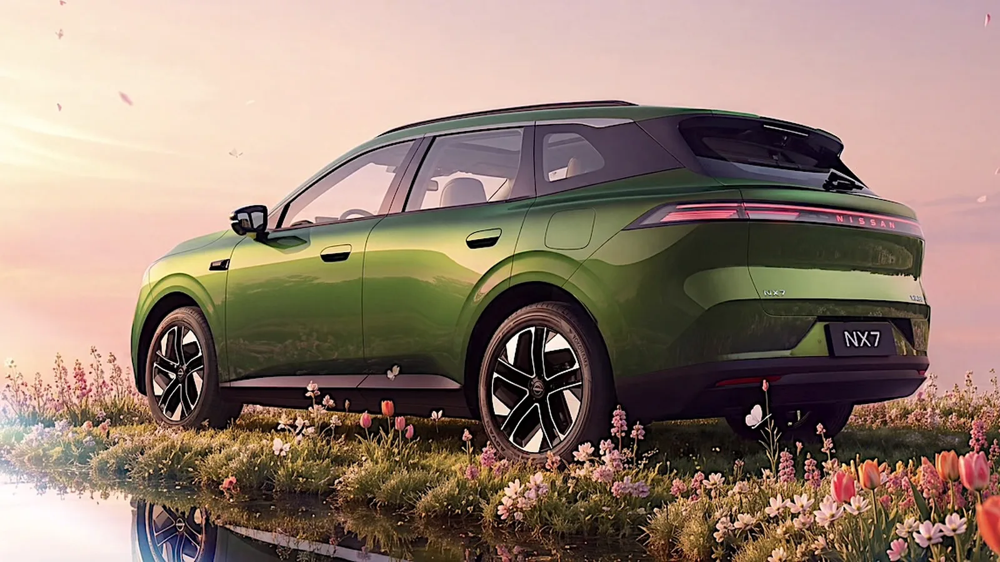

Nissan（東風日產） · 開放預訂 · 中國2026-11-13
東風日產 NX7 插電油電開放預訂：純電約 320 公里，座艙主打 55 吋 AR 抬頭顯示
$20K Nissan NX7 PHEV goes on sale with nearly 200 miles of electric range
東風日產 11 月 13 日開放 NX7 插電式油電預訂，售價 12.99 萬人民幣起，約 40 kWh 磷酸鐵鋰電池提供最多 320 公里純電里程，加滿油電合計 1,666 公里。車身長度與 Tesla Model Y 相差不到 1/4 吋，量產版將在本月廣州車展首次公開。
設計解析 Design Notes
- 座艙17.3 吋中控螢幕加全數位儀表，高階版配 55 吋 AR 抬頭顯示。
- 座椅「雲毯」座椅以感測器與氣囊陣列動態調整，含加熱、通風與 12 點按摩。
- 配置前座可完全放平成床，並有車用冰箱與防暈車系統。
- 定位以 Model Y 尺寸、約 2 萬美元的價位切入中國主流休旅市場。